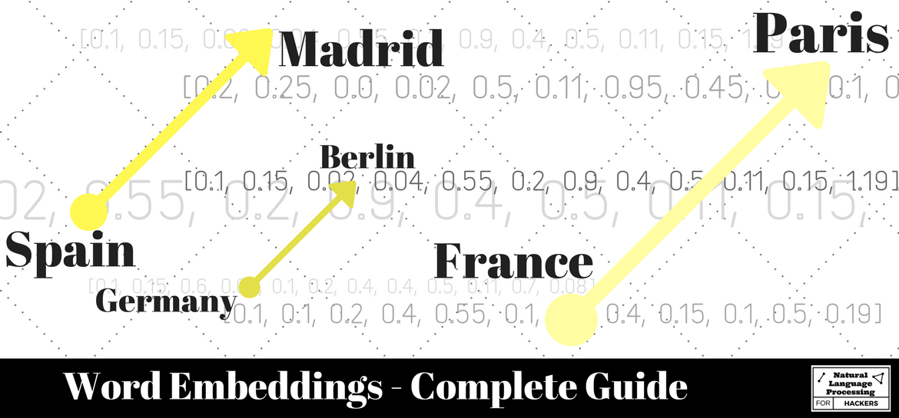
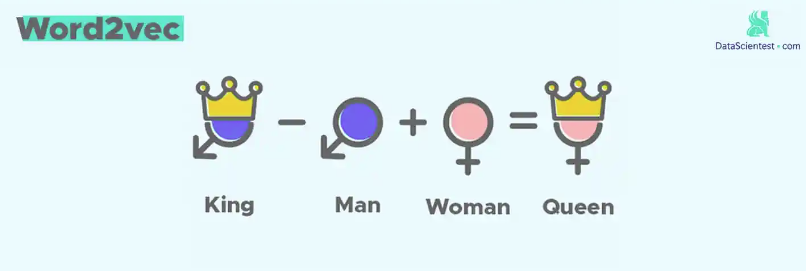
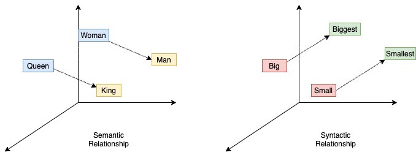

Rodriguez, Pedro L., and Arthur Spirling. “Word embeddings: What works, what doesn’t, and how to tell the difference for applied research.” The Journal of Politics 84, no. 1 (2022): 101-115.
论文作者是政治学领域的， 但是词嵌入方法在社科研究是通用的，大邓觉得挺有用的，使用chatGPT进行翻译+大邓整理， 耗时约2个小时。
1. 什么是词嵌入？
字面上，**词嵌入(Embeddings)**是使用稠密向量表示一个词语的语义。学者们已经表明，通过比较这些词向量之间的距离，我们可以了解“人类”如何理解单词的含义。因此，如果我们有一个语料库，比较“税收” 与 社会团体(“保守派”、“社会主义者”) 之间的距离， 按照语义，“税收”应该距离 “社会主义者” 跟多一些，毕竟收上来的钱是为了社会大众服务，有社会主义的成分。在词嵌入空间中，词向量含有丰富的信息，例如可以做类比。西班牙之于马德里， 正如德国至于柏林、法国之于巴黎。

2. 我没有听说过它们。这是一个新的想法吗？
不是。这个想法相当古老，至少可以追溯到20世纪50年代。如果非要说「新」，变化的只是相比过去，现在可以更快、更容易获取嵌入。
3. 好的。那么这个“旧”的想法是什么？
Firth（1957）有一个人人引用的谚语：
You shall know a word by the company it keeps
通过一个单词所处的语境，我们可以了解该单词的含义。 该谚语源于英国语言学家 J.R. Firth 的理论，他认为单词的含义是由其周围的语境和与之相伴的其他单词所决定的，因此我们需要通过单词出现的上下文来理解其含义。这一理论在语言学、自然语言处理等领域有着广泛的应用。
简而言之，这就是所谓的 “分布假设” 。字面上，这个想法是，出现在类似的 上下文Context 中的单词可能意味着相似的事物。如果“咖啡”和“茶”总是接近于“杯子”，那么我们可能会推断出“咖啡”和“茶”是相似的。
利用这一洞见的模型有时被称为 分布语义模型（distributional semantic models， DSMs）。
4. 在这种情况下，“上下文”字面上是什么意思？
在嵌入文献中，上下文通常是一个局部的对称窗口，围绕一个词展开。因此，假设我们的句子是：
“We then heard some nice, relaxing music that gently worked to a crescendo.”
“然后我们听到一些美妙、轻松的音乐，它慢慢地推向高潮。”
这里以 music 为中心的一个对称窗口可以是 (nice, relaxing) 和 (that, gently)。
三个词的窗口可以是 (some, nice, relaxing) 和 (“that, gently, worked) 。窗口内music前后的词就是ta的上下文。
5. 所以所有的DSMs都使用本地窗口吗？
不是的。 分布语义模型（DSMs）包括像隐含狄利克雷分配（LDA）这样的东西，政治学通常用于“主题模型”。但是它们通常不使用本地窗口。
6. 我明白了！所以嵌入模型没有做“词袋”假设？
好吧，这要看你的意思是什么。显然，本地窗口在某种意义上有助于考虑词序。但是在窗口内，模型通常将其视为词袋（即无序的）。

7. 嵌入向量与我在文本数据课程中学习的“向量空间”模型有关系吗？
有也没有。在典型的向量空间模型中，每个文档都是一个实值向量（通常是计数）。因此，“dog eat dog world”可能表示为[2, 1, 1]，其中第一个元素表示“dog”，第二个表示“eat”，第三个表示“world”等等。在词嵌入中，每个单词都有自己的向量，而这些向量是由模型学习的。它与向量空间模型有关，因为单词在多维空间中以向量形式表示。
8. 听起来很有趣。但是使用单词嵌入有什么好处？
事实证明，以这种方式表示单词对于许多“下游”的自然语言处理和机器学习任务是有帮助的。例如，词性标注：嵌入可以帮助我们区分单词在给定上下文中使用的“意义”。更普遍地，了解概念之间的关系可能是有用的：如果我们知道在我们的语料库中，“雨伞”比“晒霜”更接近于“雨衣”，我们可能想要向那些寻找雨衣而不是晒霜的人推广雨伞。 在政治学中的一个自然应用是建立词典：如果“共和党”在嵌入空间中靠近“保守派”和“新保守主义者”，那么这可能告诉我们，我们应该将所有这些都视为美国政治中右翼意识形态的例子。
有一个经典的关于嵌入的运算公式， 假设我们有以下单词的嵌入向量：“国王”，“女王”，“男人”，“女人”。对于某些规范，事实证明，大致上有： “国王”-“男人”+“女人”=“女王”。也就是说，“国王”类似于“女王”，就像“男人”类似于“女人”一样。


9. 你已经说服我了。那么如何获得这些嵌入？
你需要一个模型。有很多很多选择，从2000年初期的 **神经neural ** 网络模型开始。
10. 哇，“神经”听起来非常复杂啊？
不，实际上不是。这些模型也已经存在很长时间了（至少自1990年代末/2000年代初以来）。重申一下，它们只是因为现在算力最近变得快速，具有可扩展性。
11.我应该使用哪种模型？
由你自己决定，但最受欢迎的是：
| 模型 | 年份 | 资料 |
|---|---|---|
| Word2Vec | 2013 | 论文 https://arxiv.org/pdf/1310.4546.pdf 代码 https://code.google.com/archive/p/word2vec/ |
| Glove | 2014 | 网站 https://nlp.stanford.edu/projects/glove/ |
12. 什么是 Word2Vec？
它是一种实现 词嵌入 的方法，有两种不同的类型（称为“体系结构”）：
- 连续词袋（CBOW）。这假设您想要在给定上下文词（来自本地窗口）的情况下预测目标词（上面的“音乐”），这有点像做英文完形填空。
- Skip-gram。这假设您想要预测给定特定单词（在我们的例子中为 music ）的上下文词（在 music 周围的本地窗口中的内容）。
13. Word2Vec如何拟合数据？
它通过单词与单词之间进行，尝试预测目标单词或上下文，具体取决于所需的体系结构。最终，它使用神经网络模型来完成这个任务。
14. Word2Vec 是深度学习吗？
不是的。word2vec 的神经网络只有一层，所以它不是真正的 深度学习Deep Learning ， 而是“浅层学习”。
15. 什么是 GloVe ？
GloVe 的全称是 Global Vectors for Word Representation， 它也是一种生成 词嵌入 的方法，字面上表示用于单词表示的全局向量。
16. GloVe 如何拟合数据？
它使用 “全局”（聚合）共现计数。请注意，Word2Vec不会这样做：它按单词进行处理，从不将整个语料库视为一个整体。
17. 那么 GloVe 不是深度学习？
不是，但Word2Vec也不是（参见上面）。
17. 哪个更好？ GloVe 还是 Word2Vec？
没有。首先，从根本上讲，它们在所做的事情上是基本相似的。有一些证据表明，在某些任务，GloVe 更稳定，表现更好。
在我们的研究中，我们发现，“开箱即用”，相对于Word2Vec（skipgram），GloVe最初在建议提示词的良好最近邻方面表现更好（请参见下面的#27）。但是，一旦我们将Word2Vec词汇子集排除了非常罕见的单词，就在人类编码器偏好方面表现几乎相同。
18. 我有一个语料库，如何使用这些模型？
你使用 word2vec 或 glove 代码， 并将文本数据(语料)导入到代码中， 运行得到词嵌入模型文件。大邓的 cntext库支持两种算法的实现，需要注意的是， glove训练速度较慢， 而斯坦福大学训练Glove使用的是C语言代码。
- 如果担心Glove速度，就用斯坦福的代码。
- 如果想简单点，不考虑速度，可以考虑大邓整理出的cntext库
https://nlp.stanford.edu/projects/glove/
19. 嗯。听起来很复杂。还有其他选择吗？
很多时候自己训练的词嵌入模型耗时耗力， 其实如果你研究对象所涉及的数据与已有研究机构使用的语料是类似的， 也可以使用研究机构公开出的 预先训练好的词嵌入模型 。
20. 如果我的语料库与维基百科完全不同怎么办？
你可以将 word2vec 或 glove 拟合到你的文本数据中。但请注意，拟合的数据越多，词嵌入模型任务表现的越好）。因此，你可能需要相当多的数据：几百M 几个G 甚至更多，而不是区区 50 份宣言文档。
21. 好的，本地训练还是使用预训练模型。还有哪些决策需要做？
回到 FAQ 18，你需要做出决策的关键参数包括：
- 窗口大小：也就是你的单词周围的（对称的）窗口大小。例如2、4、6、10等。
- 嵌入向量长度：代表单词的向量大小。例如50、100、300、450等。
需要注意的是，即使你使用 预训练的词嵌入模型，你也需要做出这些决策，因为你将根据需求下载不同的词嵌入预训练模型。

22. 最佳的窗口大小如何确定？
对社会科学而言，窗口大小并没有固定的说法。 总体上呢，我们知道更大的窗口（>2）捕捉更多主题关系（例如“Obama-President”），而更小的窗口（<2）则捕捉词汇前后的语法关系（例如“jumps-jumping”）。
23. 最佳的词嵌入向量长度(维度数)如何确定？
对社会科学而言，维度数 也没有固定的说法。 总体上， 我们知道更大的维度数可以捕捉更多词汇语义信息。 但是维度数过大也可能不是最优的，因为这会导致冗余（即有很多维度没有作用，可能只是捕捉噪声）。但是太小也不好：极限情况下，可能无法区分单词。常见的维度数如50， 100， 200维
24. 好的，还有什么需要（不需要）了解的？
词嵌入的向量并不稳定。如果你在本地拟合你的语料库，每次你会得到不同的结果。这是由于模型的性质（机器学习类算法大多是要进行模型随机初始化，这导致每次得到的模型会有差异），这基本上是一个事实。 缓解这种情况的一种方法是多次估计相同的模型并在所需的距离度量上进行聚合。
25. 还有其他需要注意的事项吗？
是的，还有一些与技术模型拟合相关的超参数可以选择（例如收敛阈值、迭代次数）。但是我们不会深入讨论这些问题，因为许多这些问题都有适当的默认值。
26. 好的。那么对于我的「政治科学案例」，我该怎么做呢？
很高兴你问到这个问题。我们的论文涵盖了政治科学中几个语料库的这些问题，我们认为这些语料库在实际研究中是有一定代表性的。我们评估了在超参数选择之间变化时“性能”如何变化以及它如何影响稳定性。
27. 我们如何评估政治科学中的嵌入“性能”？
我们使用了四个工具：
- 技术标准：本质上是“适合度”（作为窗口大小的函数），加上计算时间。
- 稳定性： 同一模型的不同运行在关键词的最近邻居方面的相关性如何。
- 查询搜索排名相似性： 两个不同模型的查询单词的最近邻居有多相似。
- 图灵测试：请人类比较嵌入模型生成的最近邻居和（不同、独立的）人类编码器生成的最近邻居。
28. 在上下文中，什么是最近邻？查询单词是什么？
无论规范如何，词嵌入模型 都会为词汇表中的任何单词提供向量表示。 对于给定的单词的向量——我们可以使用一定的算法(余弦相似性最大)找到距离ta最近的n个词，这些是它的最近邻，彼此语义会比较紧密相似。
显然，我们不会检查词汇表中的每个单词，而是某些与政治科学有关的单词。对我们而言，这些单词与以下内容相关：
- 大的议题，如：
民主，自由，平等，正义。 - 美国的政策辩论：
移民，堕胎，福利，税收。 - 党派：
共和党，民主党
我们也可以选择其他单词，但我们认为这些是一个不错的开始。
29. 我们的语料库是什么？
我们的重点语料库是第102-111届国会的 Congressional Record 记录。它是美式英语，大约有140万个文档。 但我们还有其他语言的语料库（见下文）。
30. 我们尝试了哪些参数组合？
- 窗口大小：1、6、12、24、48
- 嵌入维度：50、100、200、300、450
31. 我们使用哪个模型？
我们同时使用 GloVe 和 Word2Vec。但是在文章的前两个部分，我们将 GloVe 视为一种基准线。 然后在论文的后面，我们将 GloVe 的性能与 Word2Vec 进行比较，以人类编码者的喜好为衡量标准。在实践中，由于模型使用的词汇不同，这种比较稍微有些复杂。
32. 图灵测试是如何实际工作的？
我们给人类编码者一组查询或提示词（来自FAQ 28）。然后告诉他们编写（十个）与这些单词相似，意义相近，且可能会出现在语料库中等等的单词。从“机器”方面，我们提取模型建议的十个最近邻。最后，我们要求（不同的，独立的）人类编码者比较“人类”的最近邻和“机器”的最近邻（我们不告诉他们哪个是哪个）。他们只需要告诉我们哪一个更适合所述提示单词。
这是一种近似的“图灵测试”，因为我们试图找出机器（模型）是否能够很好地模仿人类的能力。
33. 基于技术标准的结果如何？
首先，请注意，要评估这一点，我们参考的是 GloVe 本地拟合我们的***Congressional Record ***语料库。
更大的窗口和更多的嵌入维度总是改善模型拟合——但是二者都存在递减的回报。毫无疑问，使用非常小的嵌入维度数（<100）对拟合是不好的。并不奇怪，更大的模型——更大的窗口，更长的向量——更需要时间来拟合。但即使是最大的模型也不那么糟糕：拟合最大的模型需要大约3个小时左右。
在交换拟合与时间方面，使用标准选项6-300（即窗口大小为6，嵌入维度为300）是一个合理的选择。
34. 稳定性的结果是什么？
在其他条件相同的情况下，较大窗口size的模型更加稳定，但是在窗口size过大，尤其是在维度数很大的模型中，会出现一些性能下降。较少的维度数（其他条件相同）似乎也不太稳定。少量的维度数和小的窗口大小会产生特别高的方差结果。
35. 查询排名的相关性如何？
首先，无论查看关键政治单词还是随机单词，所有预训练模型都显示出高相关性（通常> 0.6）。也就是说，它们之间实际上没有太多“实质性”差异。 预训练模型和本地模型在这方面，相关性也很高（> 0.5），尤其是对于我们的政治单词。
这表明使用现成的预训练嵌入模型 与使用本地拟合的模型能产生近似的结论。
36. 人类更喜欢哪一个：人类还是机器？
令人惊讶的是，在我们的政治查询集合中，并没有明显的优胜者。 在自己电脑本地训练出的词嵌入模型通常可以达到人类表现约70%。预训练嵌入模型的表现更好：它们可以达到高达87%的人类表现。
37. 这些发现是否具有普适性？还是只适用于这个语料库？
我们在几个语料库上进行了相同的实验（不包括 Turing 测试），结果与上述结果大致相似。也就是说，我们认为这些结果并不是源于 Congressional Record 这个语料库本身的原因。
我们看过的其他语料库包括：
| 语料库 | 语言 | 年份 | 数据量 |
|---|---|---|---|
| Hansard | 英国英语 | 1935-2013年 | 约4.5M个文档 |
| State of the Union国情咨文 | 美国英语 | 1790-2018年 | 小语料库 |
| Cortes Generales | 西班牙语 | 1993-2018年 | 约1.3M个文档 |
| Deutscher Bundestag | 德语 | 1998-2018年 | 约1.2M个文档 |
38. 最终结论：在应用设置中，研究人员应该怎么做？
对于政治学而言，预训练词嵌入模型 的标准设定是 6-300 GloVe模型（窗口大小=6，维数=300）的表现与其他任何方法相比都差不多。这些模型与您进行的其他事情相当高度相关。更重要的是，人类喜欢这些结果——尤其是与本地训练模型相比，它甚至接近人类生成的结果。显然，使用预训练模型更便宜。但我们的经验是，这可能本身并不足以说服人，因为对于大约100万个文档的语料库而言，本地训练处这些模型是相当快速。
您可能会通过进行本地拟合来在实质上获得一些收益，但从我们的人类验证来看，这些收益并不明显。但是，您可能正在优化一些标准，而我们并不知道这些标准是什么。如果您必须进行本地拟合，则要避免小窗口和小维数，特别是在结合使用时。
39. 最后的想法是
我们没有研究词嵌入是否本身相对于其他算法（如词袋法）代表着更好的东西。粗略地说，仅仅因为词嵌入模型现在非常流行，就不意味着它们应该取代您正在进行的主题模型或其他模型。
这是一个发展迅速的领域。更复杂，表现更好的词嵌入模型版本将会（已经）出现。因此，我们认为我们的关键贡献是图灵测试的安排：我们推测，在政治科学中，受监督的问题将继续相对较少，因此学者们应该确保他们的文档和单词的模型表示确实与有用的东西相符。
相关内容
- 文献汇总 | 词嵌入 与 社会科学中的偏见(态度)
- 转载|大数据时代下社会科学研究方法的拓展——基于词嵌入技术的文本分析的应用
- OS2022 | 概念空间 | 词嵌入模型如何为组织科学中的测量和理论提供信息
- 可视化 | 人民日报语料反映七十年文化演变